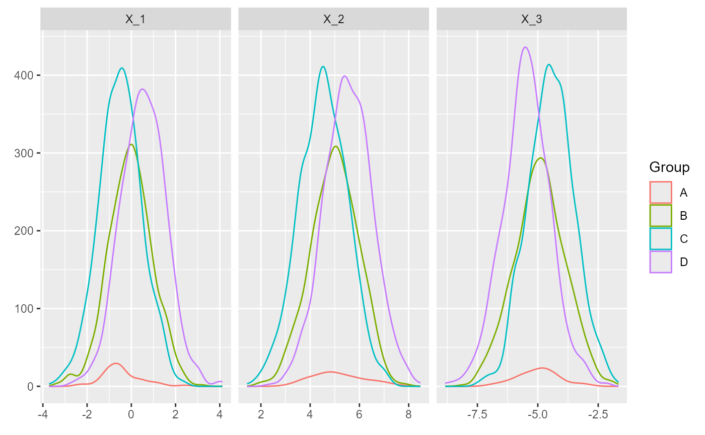
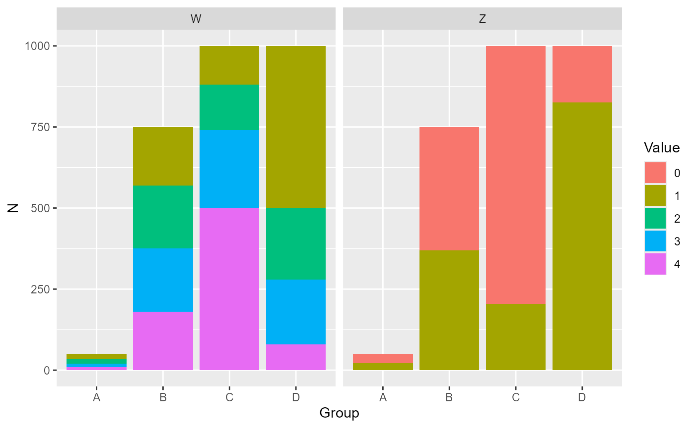

Polymatching
polymatching.RmdThe algorithm: a brief overview
The polymatching algorithm is organized in two main stages. First, a starting matched sample is generated to initialize the algorithm. Second, an iterative procedure is applied to reduce the distance within matched sets, thus improving the quality of the solution.
For the initialization of the first matched sample, this package implements a sequential strategy. The units of the first two groups are optimally matched. Then, the units from the third group are optimally matched to the existing pairs. The units from the fourth group are then optimally matched to the existing triplets, and so on. Note that, at each step, the existing two-group optimal matching procedure can be applied because each problem can be addressed by a two-group matching algorithm (matching units to fixed pairs, units to fixed triplets and so on). The order of the considered groups can be specified by the user or, by default, is based on their size, sequentially matching groups from the smallest to the largest. Furthermore, the package enables user to provide any given matched set as starting point, so that the algorithm can explore any improvement in terms of total distance.
The second stage of the algorithm is the iterative procedure. For example, with groups, the algorithm starts by relaxing the linkage with the first group and the units of this group are rematched to the fixed -uples. The procedure is repeated for each of the groups and the attained total distance is recorded. If any newly generated matched set improves the total distance, the matched sample attaining the smallest total distance is selected and the iterations continue. Again, the linkage to each group is sequentially relaxed and possible reductions in the total distance are explored. The algorithm stops when no improvement in the total distance is found.
A toy dataset
To showcase the functionalities of the polymatching
package, let’s start by generating a toy dataset with 3 continuous
variables
(,
and
),
one binary variable
()
and one categorical variable
(),
with four levels. The units are divided in 4 groups, labeled as A, B, C
and D, with different size
(,
,
).
Let
be the name of the variable identifying the assigned group.
#Set seed for reproducibility of results
set.seed(1234)
#Group sizes
n_A <- 50
n_B <- 750
n_C <- n_D <- 1000
#Generate variables separately for each group
dat_A <- data.frame(X_1 = rnorm(n_A, mean = 0, sd = 1),
X_2 = rnorm(n_A, mean = 5, sd = 1),
X_3 = rnorm(n_A, mean = -5, sd = 1),
Z = factor(rbinom(n_A, size = 1, prob = .5)),
W = factor(apply(rmultinom(n_A, size = 1, prob = c(.25, .25, .25, .25)) == 1,
MARGIN = 2,
FUN = which)),
G = "A",
stringsAsFactors = FALSE)
dat_B <- data.frame(X_1 = rnorm(n_B, mean = 0, sd = 1),
X_2 = rnorm(n_B, mean = 5, sd = 1),
X_3 = rnorm(n_B, mean = -5, sd = 1),
Z = factor(rbinom(n_B, size = 1, prob = .5)),
W = factor(apply(rmultinom(n_A, size = 1, prob = c(.25, .25, .25, .25)) == 1,
MARGIN = 2,
FUN = which)),
G = "B",
stringsAsFactors = FALSE)
dat_C <- data.frame(X_1 = rnorm(n_C, mean = -0.5, sd = 1),
X_2 = rnorm(n_C, mean = 4.5, sd = 1),
X_3 = rnorm(n_C, mean = -4.5, sd = 1),
Z = factor(rbinom(n_C, size = 1, prob = .2)),
W = factor(apply(rmultinom(n_A, size = 1, prob = c(.1, .2, .3, .4)) == 1,
MARGIN = 2,
FUN = which)),
G = "C",
stringsAsFactors = FALSE)
dat_D <- data.frame(X_1 = rnorm(n_D, mean = 0.5, sd = 1),
X_2 = rnorm(n_D, mean = 5.5, sd = 1),
X_3 = rnorm(n_D, mean = -5.5, sd = 1),
Z = factor(rbinom(n_D, size = 1, prob = .8)),
W = factor(apply(rmultinom(n_A, size = 1, prob = c(.4, .3, .2, .1)) == 1,
MARGIN = 2,
FUN = which)),
G = "D",
stringsAsFactors = FALSE)
dat <- rbind(dat_A, dat_B, dat_C, dat_D)The following plot shows the distribution of the continuous variables.
library(ggplot2)
library(tidyr)
dat %>%
pivot_longer(cols = c("X_1", "X_2", "X_3"),
names_to = "variable",
values_to = "value") %>%
ggplot() +
geom_density(aes(x = value, group = G, color = G, after_stat(count))) +
facet_grid(cols = vars(variable), scales = "free") +
labs(x = element_blank(), y = element_blank(), color = "Group")
The distribution of the binary and categorical variables is represented below. The two figures show a good overlap in all of the variables.
dat %>%
pivot_longer(cols = c("Z", "W"),
names_to = "variable",
values_to = "value") %>%
ggplot() +
geom_bar(aes(x = G, fill = value)) +
facet_grid(cols = vars(variable), scales = "free") +
labs(x = "Group", y = "N", fill = "Value")
Getting started with polymatch
The function polymatch can be used to generate matched
sets with units that are similar with respect to the desired variables.
In the simplest matched design, matched sets are made by one unit for
each group. In the simulated dataset, this means creating quadruplets
with one subject from each of the four groups. This is the default
design of polymatch. The following code can be used to
generate matched sets that are similar with respect to the three
continuous variables
,
and
.
library(polymatching)
result_match_1 <- polymatch(G ~ X_1 + X_2 + X_3,
data = dat,
distance = "euclidean")## Conditional optimal matching algorithm
## Number of observations: 2800
## Number of groups: 4
## Total distance of starting matched sample: 88.663
## Ended iteration 1 - total distance: 87.388
## Ended iteration 2 - total distance: 86.546
## Ended iteration 3 - total distance: 86.246
## Ended iteration 4 - total distance: 86.119
## Ended iteration 5 - total distance: 86.057
## Ended iteration 6 - total distance: 85.897
## Ended iteration 7 - total distance: 85.871
## End
## Number of iterations: 8, total distance:85.871
## Number of matched sets: 50The output shows the total distance attained at each step of the iterative process. To identify the generated sets, the IDs of the matched sets can be added to the dataset as a new variable.
dat$match_id_1 <- result_match_1$match_idWe can check that each group is made of four units, one from each group. The number of matched sets is 10, as this is the size of the smallest group.
## Group
## Match ID A B C D
## 1 1 1 1 1
## 2 1 1 1 1
## 3 1 1 1 1
## 4 1 1 1 1
## 5 1 1 1 1
## 6 1 1 1 1Unbalanced matched sets
As the groups B, C and D are much larger than A, we can also match
multiple subjects from B, C and D to each subject in A. This can be done
with the parameter vectorK of the function.
result_match_2 <- polymatch(G ~ X_1 + X_2 + X_3,
data = dat,
distance = "euclidean",
vectorK = c("A" = 1,
"B" = 2,
"C" = 3,
"D" = 3))## Conditional optimal matching algorithm
## Number of observations: 2800
## Number of groups: 4
## Total distance of starting matched sample: 180.687
## Ended iteration 1 - total distance: 174.613
## Ended iteration 2 - total distance: 172.622
## Ended iteration 3 - total distance: 171.770
## Ended iteration 4 - total distance: 171.084
## Ended iteration 5 - total distance: 170.499
## Ended iteration 6 - total distance: 170.457
## Ended iteration 7 - total distance: 170.011
## Ended iteration 8 - total distance: 169.903
## End
## Number of iterations: 9, total distance:169.903
## Number of matched sets: 50
dat$match_id_2 <- result_match_2$match_idNow, each unit from A is matched to 2 units from B and to 3 units from C and D.
## Group
## Match ID A B C D
## 1 1 2 3 3
## 2 1 2 3 3
## 3 1 2 3 3
## 4 1 2 3 3
## 5 1 2 3 3
## 6 1 2 3 3Exact matching constraints
It is possible to force the algorithm to match only the units that
share the value of one variable (or multiple variables). This can be
done with the exactMatch parameter. With the following
code, only units with the same value in
and
can be matched.
result_match_3 <- polymatch(G ~ X_1 + X_2 + X_3,
data = dat,
distance = "euclidean",
exactMatch = ~ Z + W)## Conditional optimal matching algorithm
## Number of observations: 2800
## Number of groups: 4
## Total distance of starting matched sample: 198.824
## Ended iteration 1 - total distance: 193.142
## Ended iteration 2 - total distance: 189.467
## Ended iteration 3 - total distance: 187.170
## Ended iteration 4 - total distance: 185.916
## Ended iteration 5 - total distance: 185.225
## End
## Number of iterations: 6, total distance:185.225
## Number of matched sets: 50
dat$match_id_3 <- result_match_3$match_idPropensity score matching
A popular strategy to balance multiple covariates is to match on the propensity score. In the two-group setting, it is defined as the probability of receiving the treatment or exposure of interest and is commonly estimated through logistic regression. With multiple treatment groups, it is defined as the vector of probabilities of receiving each treatment and is generally estimated through a multinomial logistic model.
library(VGAM)
psModel <- vglm(G ~ X_1 + X_2 + X_3 + Z + W,
family = multinomial,
data = dat)
summary(psModel)## Call:
## vglm(formula = G ~ X_1 + X_2 + X_3 + Z + W, family = multinomial,
## data = dat)
##
## Coefficients:
## Estimate Std. Error z value Pr(>|z|)
## (Intercept):1 2.06469 1.10818 1.863 0.06244 .
## (Intercept):2 5.51731 0.45581 12.105 < 2e-16 ***
## (Intercept):3 9.50965 0.53096 17.910 < 2e-16 ***
## X_1:1 -1.02026 0.15302 -6.668 2.60e-11 ***
## X_1:2 -0.59617 0.05961 -10.000 < 2e-16 ***
## X_1:3 -1.06896 0.07168 -14.913 < 2e-16 ***
## X_2:1 -0.38721 0.15348 -2.523 0.01164 *
## X_2:2 -0.54746 0.06059 -9.035 < 2e-16 ***
## X_2:3 -0.98895 0.07211 -13.714 < 2e-16 ***
## X_3:1 0.43436 0.15035 2.889 0.00387 **
## X_3:2 0.48762 0.05869 8.309 < 2e-16 ***
## X_3:3 0.90711 0.07007 12.946 < 2e-16 ***
## Z1:1 -1.76926 0.30515 -5.798 6.71e-09 ***
## Z1:2 -1.44146 0.12341 -11.680 < 2e-16 ***
## Z1:3 -2.70446 0.14623 -18.495 < 2e-16 ***
## W2:1 0.74380 0.38497 1.932 0.05334 .
## W2:2 0.94372 0.14976 6.302 2.95e-10 ***
## W2:3 1.04912 0.19620 5.347 8.93e-08 ***
## W3:1 0.40365 0.42168 0.957 0.33844
## W3:2 0.96044 0.15184 6.325 2.53e-10 ***
## W3:3 1.53118 0.18787 8.150 3.63e-16 ***
## W4:1 1.31575 0.43265 3.041 0.00236 **
## W4:2 1.79106 0.18072 9.911 < 2e-16 ***
## W4:3 3.14656 0.20647 15.240 < 2e-16 ***
## ---
## Signif. codes: 0 '***' 0.001 '**' 0.01 '*' 0.05 '.' 0.1 ' ' 1
##
## Names of linear predictors: log(mu[,1]/mu[,4]), log(mu[,2]/mu[,4]),
## log(mu[,3]/mu[,4])
##
## Residual deviance: 4433.518 on 8376 degrees of freedom
##
## Log-likelihood: -2216.759 on 8376 degrees of freedom
##
## Number of Fisher scoring iterations: 6
##
## No Hauck-Donner effect found in any of the estimates
##
##
## Reference group is level 4 of the responseWith 4 groups, the model estimates 4 probabilities and 3 logits (, , ). Units are generally matched on the logits of the propensity score.
logitPS <- predict(psModel, type = "link")
dat$logit_AvsD <- logitPS[,1]
dat$logit_BvsD <- logitPS[,2]
dat$logit_CvsD <- logitPS[,3]
result_match_4 <- polymatch(G ~ logit_AvsD + logit_BvsD + logit_CvsD,
data = dat,
distance = "euclidean")## Conditional optimal matching algorithm
## Number of observations: 2800
## Number of groups: 4
## Total distance of starting matched sample: 72.488
## Ended iteration 1 - total distance: 71.590
## Ended iteration 2 - total distance: 70.647
## Ended iteration 3 - total distance: 70.106
## Ended iteration 4 - total distance: 69.072
## Ended iteration 5 - total distance: 68.989
## Ended iteration 6 - total distance: 68.946
## Ended iteration 7 - total distance: 68.933
## End
## Number of iterations: 8, total distance:68.933
## Number of matched sets: 50
dat$match_id_4 <- result_match_4$match_id